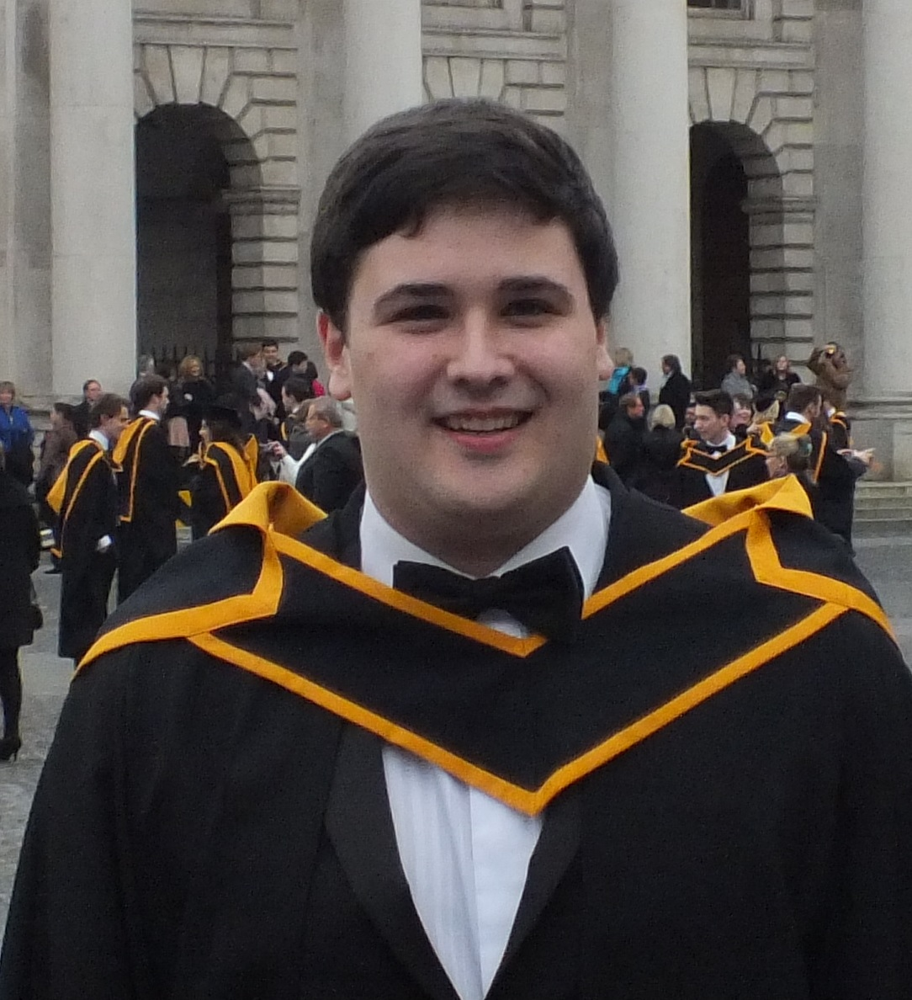

David Kane is currently studying for a post graduate Diploma in Computing. Prior to this, David was awarded an honours business Degree from Trinity College. When asked about the reasons for the switch from Business to Computing, David replied that the felt that the combination of Business and Computing would best position him for his future career. David stated that "you only have to listen to the news to appreciate the demand for computer graduates in the work-place and I feel that a post graduate qualification in computing coupled with my business degree will resonate very well with potential employers". Sport always has been and continues to be a major passion for David. Prior to College David studied for his Leaving Certificate in Blackrock College where he played rugby throughout his school career. David continues to play American Football for Trinity College and vows to continue playing for both the enjoyment of the game and maintenance of a good work/life balance.